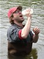
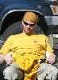

|
|
Participants & Products
2007 Teachers
|
Name: Jennifer Bacus
School: Kwigillingok High School, Lower Kuskokwim
Project: How the Kwigillingok River has Changed over Time (PDF: 178K) |
|
Name: Gary Cooper
School: UAF-GI Education Outreach, Delta Junction
Project: How Temperature and Turbidity Change from April to October on Clearwater River Delta
Junction, Alaska (PDF: 253K) |
|
Name: David Gillam
School: Begich Middle School, Anchorage
Project: How has Restoration of the Stream Channel of Chester Creek Near Begich MiddleSchool Changed the Water Quality (PDF: 164K) |
|
Name: Maryjane Hadaway
School: Kongiganak
Project: How Turbidity Changes with Elevation along Lower Montana Creek (PDF: 140K) |
|  |
Name: Geoff Johnson
School: Huslia High School, Yukon
Project: Tidal flow and sediment patterns Juneau wetlands |
|
Name: David Kovach
School: Dzanti'ki Heeni Middle School, Juneau
Project: How Distance from School Location to Field Trip Study Site Effects Research Opportunities for a Middle School Science Class (PDF: 260K) |
|
Name: Randy Merrill
School: Colony Middle School, Mat-Su
Project: Populated Areas in the Midwest and How They are affected by Tornado Alley (PDF: 145K) |
|
Name: Faith Scott
School: Colony High School, Mat-Su
Project: The Effect of Storm Drain Run-off on Total Aerobic and Coliform Bacteria Blooms in Cottonwood Creek, Wasilla, AK (PDF: 1.5M) |
 |
Name: Lori Sheppard-Gillam
School: Central Middle School, Anchorage
Project: How has the Ship Creek Restoration Project of 2005 Affected Sports Fishing in the Lower Reach of Ship Creek? (PDF: 204K) |
|
Name: John Wahl
School: JSD- Technology Specialist, Juneau
Project: How Does Urban Development Impact the Duck Creek Watershed? (PDF: 1.8M) |
2006 Teachers
|
Name: Ben McLuckie
School: Hoonah High School
Project: Solar Reflectivity of Mendenhall Valley (PDF: 259K) |
|
Name: Kathleen Iler-Galau
School: Floyd Dryden Middle School
Project: When Will the Taku Glacier Dam the Taku River Again? (PDF: 186K) |
|
Name: Chris Jacobson (worked with Sue Skvorc)
School: Mat-Su Correspondence Study School, Mat-Su
Project: Spuhn Island Parking Problem – Analysis And Recommendations (PDF: 255K) |
|
Name: Sue Skvorc (worked with Chris Jacobson)
School: Colony High School, Mat-Su
Project: Spuhn Island Parking Problem – Analysis And Recommendations (PDF: 255K) |
 |
Name: Pam Morris (worked with Rebecca Farrell)
School: Floyd Dryden Middle School, Juneau
Project: Can Students Use GPS to Find Specific Plants? (PDF: 236K) |
|
Name: Rebecca Farrell (worked with Pam Morris)
School: Floyd Dryden Middle School, Juneau
Project: Can Students Use GPS to Find Specific Plants? (PDF: 236K) |
|
Name: Jim Parkin
School: Angoon High School, Chatham
Project: Where are the good yard sales? (PDF: 1.3M) |
|
Name: Patty Brown
School: Haines Middle School, Haines
Project: Will this be "A road less travelled"? (PDF: 194K) |
|
Name: Barbara Coate
School: Dzanti'ki Heeni Middle School, Juneau
Project: Mendenhall terminus Change |
|  |
Name: Nathan Adams
School: Floyd Dryden Middle School, Juneau
Project: Slope Assessment-Sking Mt Roberts? |
|
Name: Mary Lou Gervais
School: Juneau-Douglas High School, Juneau
Project: Walking time distances from JDHS-In class field trips |
|
Name: Debbie Caron
School: Yakutat High School, Yakutat
Project: Predicting Advance on the Mendenhall glacier |
|
Name: Koren Bosworth
School: JDHS Science Fair Coordinator, Juneau
Project: Classification of North Doulgas wetlands |
|
Name: Mark Doner
School: Colony High School, Mat-Su
Project: Slope Assessment-Sking Mt Roberts |
|
Name:Carrie Steele
School: Nunapitchuk Middle School, Lower Kuskokwim
Project: Predicting Advance on the Mendenhall glacier |
2005 Pilot Workshop Teachers
|
Name: Paula Savikko
School: Dzanti’ki Heeni Middle School, Juneau
Project: Knotweed Project: Spread of invasive plant around the old mining community surrounding our school |
|
Name: Mary Hausler
School: Dzanti’ki Heeni Middle School, Juneau
|
 |
Name: Susan Dunham
School: Palmer Middle School, Mat-Su
|
|
Name: Edward O’Connor
School: Susitna Middle School, Mat-Su
|
|
Name: Darien Greisen
School: Bethel High School, Lower Kuskokwim
|
|
Name: Tim Lussow
School: Colony High School, Mat-Su
|
|
Name: Pat Cunningham
School: Colony High School, Mat-Su
|
|
Name: Kathleen Bohach
School: Principal Newtok School, Lower Kuskokwim
|
|
Name: Debbie Chalmers
School: Alyeska Middle School (’05), Juneau Middle School Charter (’07), Juneau
|
|
Name: Kay Holmes
School: Alyeska Correspondence Middle School, Juneau
|
|